Intro
PetCare.co
 Role: UX Designer, UX Researcher, Information Architect
Role: UX Designer, UX Researcher, Information Architect
 Duration:
Duration:
March 12 – July 14, 2026
 Type:
Type:
Independent conceptual project
PetCare.co — Case Study
Restoring Confidence to the Pet Shopping Decision
The Product
PetCare.co is a mobile-first ecommerce platform for pet products, built on a simple premise: pet owners don't want more products, they want the right product. Instead of competing on discounts, reviews, and search volume like the rest of the category, PetCare.co positions itself as a shopping companion — one that understands a specific pet's profile and recommends what actually fits, backed by veterinary reasoning rather than marketing copy.
The Problem
Buying for a pet carries a strange asymmetry: the emotional stakes are high (owners describe their pets as family), but the tools available to make that decision are the same generic ecommerce patterns used to sell anything else — star ratings, banners, and infinite scroll. Across the category, this shows up as real, documented frustration. Pet owners report formula changes discovered only after their pet refuses the food, autoship charges that shift without clear notice, and price transparency that appears late — problems visible across a large volume of customer reviews describing manufacturers changing formulas without warning and pets rejecting food as a result, as well as autoship prices increasing with no clear notice in the order confirmation. These aren't edge cases; they recur consistently enough across review platforms to represent a structural gap in how the category is designed, not isolated service failures.
The Goal
The objective was to redesign how pet owners make decisions — not to out-catalog Chewy or out-discount Amazon. Two high-level objectives guided every downstream decision:
- Replace "what sells" with "what fits" as the organizing logic of the product.
- Make every recommendation explainable, so trust is earned through transparency rather than asserted through branding.
Core value proposition: Everything your pet needs. Chosen around them.
Empathize
Understanding the user
Research Approach
Direct access to a large, diverse sample of pet owners wasn't feasible within the scope of an independent project, so research combined structured secondary synthesis (Baymard Institute, Nielsen Norman Group, Shopify ecommerce benchmarks, category-specific reports) with an empathy-mapping exercise built from real user language sourced from Reddit, Trustpilot, and ComplaintsBoard reviews of category incumbents. This grounded each persona's frustrations in language pet owners actually use, rather than assumptions about what should frustrate them.
That grounding matters. One widely used pet retailer has accumulated well over a hundred unresolved complaints on a single complaints platform, and independent review aggregators note the company's Trustpilot rating sits at a notably low average, with the large majority of reviews landing at the bottom of the scale — much of it concentrated around billing clarity and subscription management. That's not a UI polish problem. It's a trust-architecture problem, and it became the throughline for all three personas. References here↗
User Journey Elena Vargas
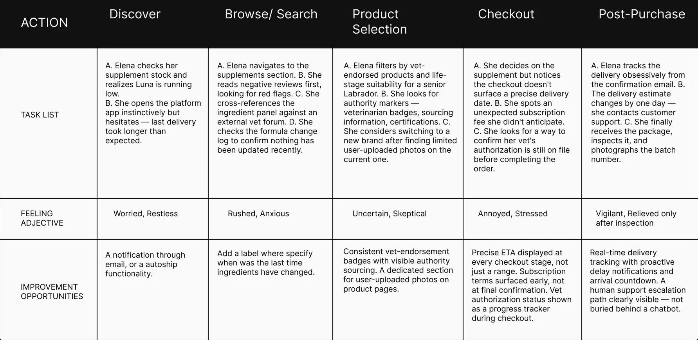
User Journey Jamal Washington
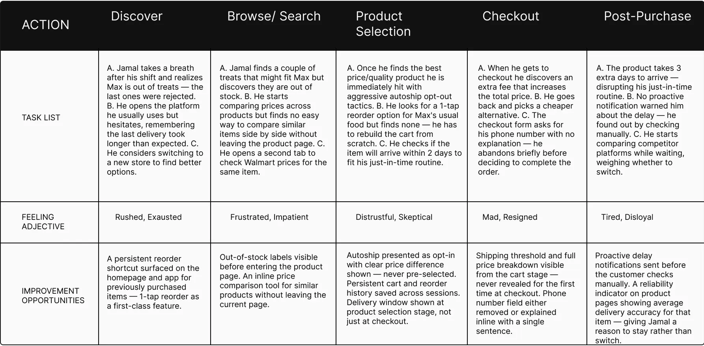
User Journey Alex Kim
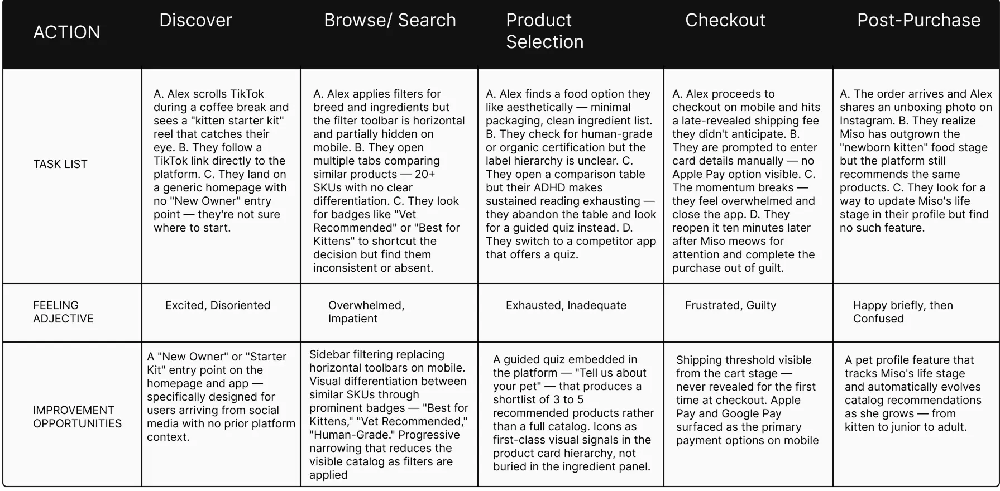
Aggregate Empathy Map
Synthesizing all three (plus two secondary archetypes — the Platform Skeptic and Convenience Optimizer — that informed edge-case decisions) surfaced one consistent tension: pet owners research like experts but are served like generic shoppers. They think in terms of safety and suitability ("Is this safe/vet-approved? Has it changed?"), but the interfaces they use are optimized for volume and conversion, not confidence. That gap — between the depth of the decision and the shallowness of the tools available to make it — became the design brief.
Define
From research to pillars
From Research to Pillars
The Empathize stage surfaced three distinct psychologies — Elena's harm-avoidance, Jamal's economic bounded-attachment, and Alex's identity-driven overwhelm — but underneath the differences, each persona kept failing at the *same three moments* in the shopping journey. The Define stage's job wasn't to invent new priorities; it was to name the pattern already sitting inside the empathy work and turn it into pillars specific enough to design against.
Core Strategic Pillars
1. Reduce Cognitive Load
This pillar came directly from Alex's frustration with catalogs offering 20+ nearly identical SKUs with no differentiation or entry point — a pattern that produces decision paralysis for someone with ADHD-related bandwidth constraints. But the same failure showed up for Elena too: her research process (reading full ingredient panels, checking multiple similar-pet reviews before trusting a product) is itself a cognitive-load workaround for a catalog that doesn't pre-filter anything on her behalf. Two personas with opposite motivations — one avoiding harm, one avoiding overwhelm — converged on the same root cause: the catalog asks the user to do the narrowing work the platform should be doing.
2. Increase Confidence
This pillar came from Elena and Jamal's shared vulnerability to *late-arriving information*. Elena's highest-anxiety trigger is a formula change or delivery delay she discovers only after the fact — never flagged proactively. Jamal's cart abandonment is driven by the same structural problem in a different currency: prices, fees, and stock status that surface only at checkout instead of earlier in the funnel, at the exact moment he's already invested time comparing options. Different stakes (health vs. money), same design failure: trust signals exist, but they arrive too late to prevent the moment of doubt.
3. Make Recommendations Transparent
This pillar came from what was *missing* across all three personas rather than a shared complaint. Elena needs to know *why* a product is safe for Luna specifically, not just that it's popular. Jamal needs to know *why* a price or plan is his best option, not just that it exists. Alex needs a recommendation to explain itself in plain terms, because a black-box "Best Match" badge gives them nothing to reason about — and reasoning is what converts overwhelm into a decision. The competitive audit reinforced this: every incumbent platform separates expert reasoning (editorial, vet content) from the purchase flow itself, so even where good information exists, it isn't attached to the recommendation the user is actually looking at.
Why These Three, Together
No single persona justifies all three pillars alone — that's the point. Each pillar is the answer to a failure that recurred across at least two of the three research profiles, which is what makes them structural priorities for the product rather than a fix for one user type. Together, they define what "having an expert beside you" has to mean mechanically: an expert *pre-filters* (Pillar 1), an expert *tells you things before you have to ask* (Pillar 2), and an expert *always explains their reasoning* (Pillar 3).
Ideate
Generating solutions
How Might We
Each persona's problem statement was translated into a distinct set of HMWs to keep solutions grounded in a specific psychology rather than generic ecommerce best practice:
Elena — How might we make Elena feel as protected as if a vet were purchasing for her? How might we make her feel in control of her order from placement to arrival? How might we make discovering product information feel trustworthy rather than stressful?
Jamal — How might we show consideration for every second and dollar Jamal spends? How might we make his recurring purchases effortless without feeling locked in? How might we make our delivery commitments feel as reliable as his own routine?
Alex — How might we make Alex feel that PetCare.co understands what it means to become a cat parent for the first time? How might we turn "too many choices" into "exactly the right one"? How might we sustain their enthusiasm through Miso's life stages?
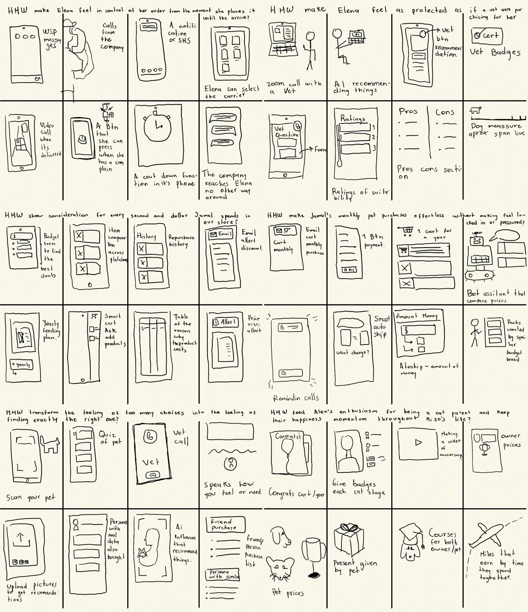
In these sketches I was able to visualize a wide range of ideas. I started with the most intuitive ideas and then moved into the more experimental ones, but I always kept in mind the user's needs and the problem statement.
Competitive Audit
The audit was built around one question: what should PetCare.co build, and where is the clearest competitive white space to build it in? Five competitors were evaluated — three direct (Chewy, Open Farm, The Farmer's Dog) and two indirect (Dog/Cat Food Advisor, Pawdi) — across transparency, guided discovery, checkout friction, and mobile UX, then mapped against each persona's specific needs.
Key finding: the market is structurally split. Platforms with strong expert content and transparency (Dog Food Advisor, Pawdi) have no purchase flow. Platforms with strong purchase flows (Chewy) are dominated by promotional noise that undermines the very trust signals owners need. No competitor connects the two.
Five additional gaps stood out consistently:
- No competitor shows formula-change timestamps — every platform leaves owners to discover changes reactively.
- No competitor surfaces delivery ETAs early — ETAs appear only at address entry or checkout, never at the point of decision-making.
- No competitor has a functional new-owner entry point — The Farmer's Dog's onboarding quiz comes closest but serves only its own subscription; Chewy's pet-profile feature exists but is broken.
- No competitor offers cross-platform price comparison — every price tool is self-referential.
- Cat ownership is consistently under-served relative to dog ownership across the entire competitive set.
Opportunities
Each gap translated into a concrete feature direction: a visible formula-change log on every product page; delivery ETAs surfaced at the listing and cart stage, not just checkout; a catalog-wide guided quiz for new owners (rather than a single-product onboarding flow); expert guidance embedded directly in the purchase flow instead of siloed as editorial content; and a first-class cat ownership experience built with the same depth as the dog catalog.
Prototype
Layout Blueprints
Prototype
Three screens were prioritized for the design walkthrough, each mapped to a specific persona tension:
Homepage — Opens with an onboarding moment ("Tell us who's home") before any product is shown, directly answering Alex's need for a guided entry point rather than an open catalog. The hero deliberately leads with philosophy — "Everything your pet needs, chosen around them" — before commerce, setting an editorial, non-transactional tone from the first screen.
Product Detail Page — Reframes the standard "Excellent Match" badge as "Suitability For: Senior, Sensitive Stomach" — naming exactly what the score is measuring rather than a vague superlative. Beneath it, the "Why This Score" section explains the actual mechanism (e.g., hydrolyzed protein reducing immune triggers) instead of generic marketing copy — the core mechanism for earning Elena's trust and giving Jamal a fast, legible reason to decide.
Vet Insight Drawer — Rather than routing users to a separate content page, veterinary reasoning opens in a contextual drawer triggered from the compatibility section itself ("Reviewed by Dr. Ana Morales — Read Full Insight"). This was a direct response to the audit finding that expert content and purchase flow are almost never integrated in the category — keeping Elena's need for authority signals inside the moment of decision rather than external to it.
Across all three, typography does the emotional work the category usually assigns to photography and banners — large type, generous negative space, and a muted, non-"pet store" palette (deep royal blue, warm coral, warm ivory) reinforce the calm, editorial register the brand needed to feel earned rather than performed.
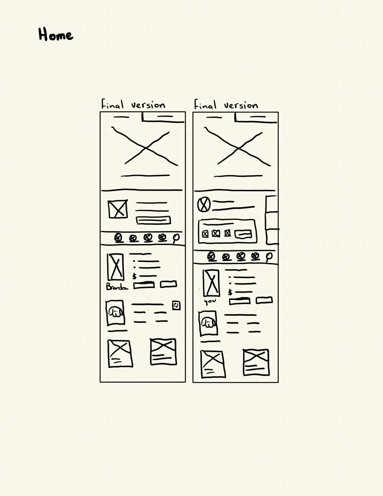
Homepage papper wireframe
Here I wanted to find a way to discover products as fast as possible avoiding overwhelming users with too many options at once
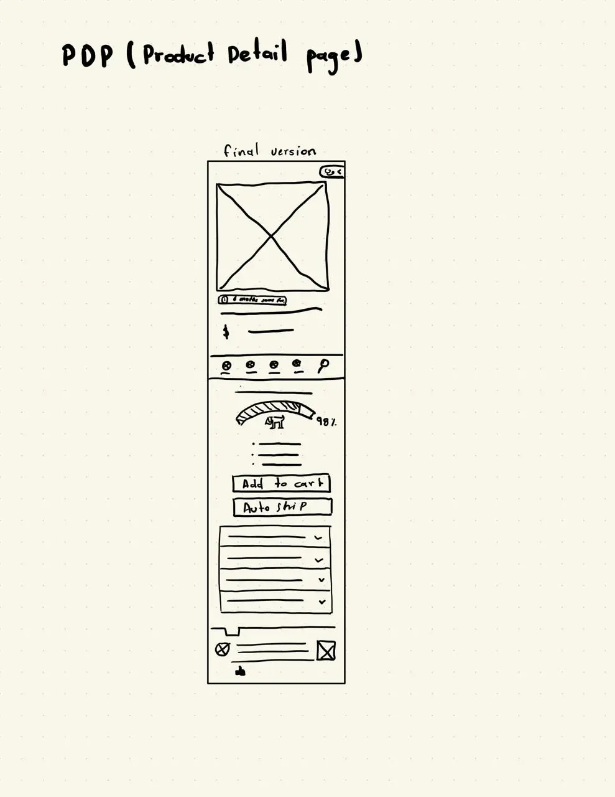
PDP papper wireframe
Here I wanted to provide users with all the information they need to make a decision confidently
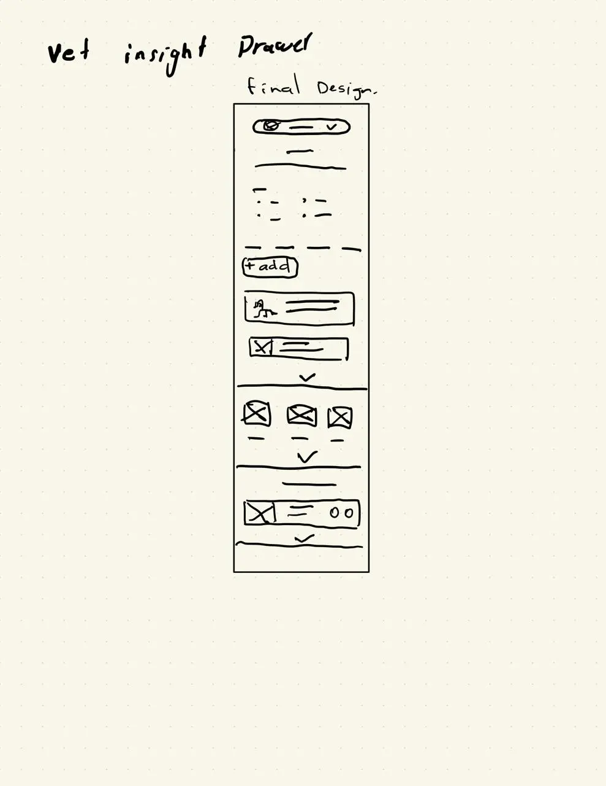
Vet insight drawer papper wireframe
Here I wanted to provide users with reliable information from certified veterinarians without leaving the product detail page
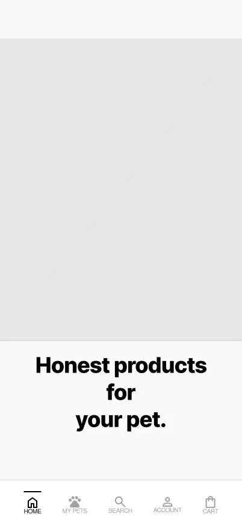
Homepage lofi mockup
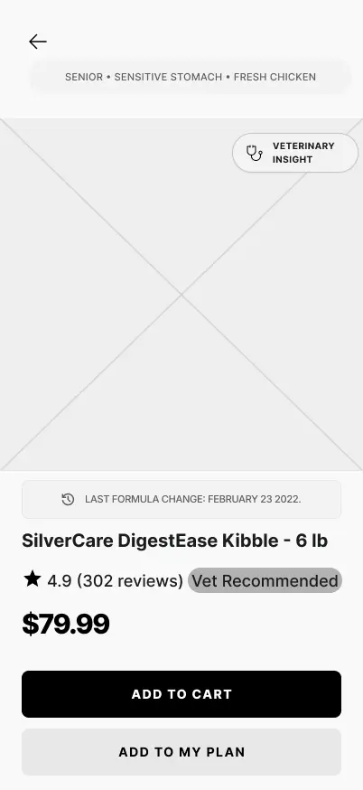
PDP lofi mockup
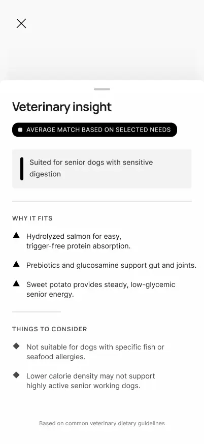
Vet insight drawer lofi mockup
Before moving to high-fidelity, I validated the core navigation logic in low-fidelity — testing whether users could move from Home → guided quiz → product listing without getting lost, ahead of investing in visual design. You can check the lofi prototype Lofi Prototype. This early concept was tested, its findings are presented in the Test Stage ↗.
Then I moved to high-fidelity with a specific art direction in mind: mid-century commercial illustration. Editorial ad work from that era used confident linework, warm limited palettes, and painterly texture to communicate care while still feeling considered and authoritative, which mapped almost exactly onto what the product needed to feel like "an expert beside you" without tipping into either clinical coldness or pet-store cuteness.
Art direction sample
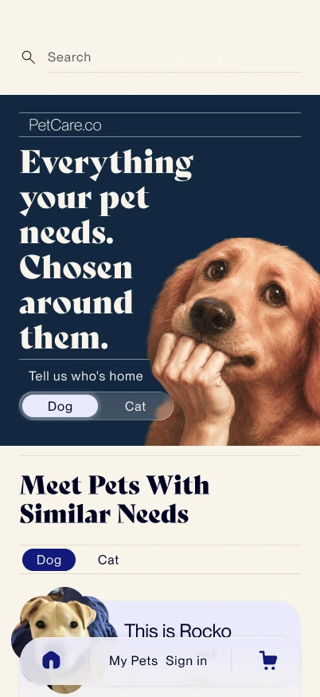
Homepage hifi mockup
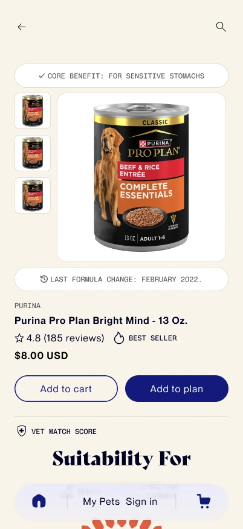
PDP hifi mockup
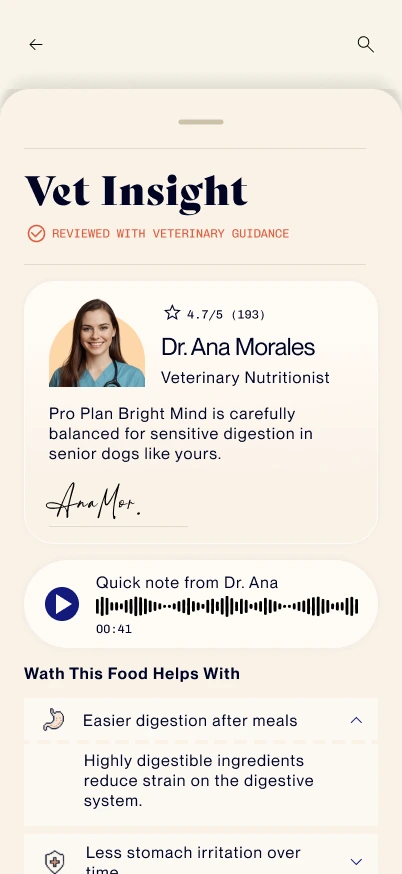
Veterinary insight drawer hifi mockup
Test
Validating Concepts
Methodology
The original research plan called for a broader moderated study across all three personas. Budget and access constraints for an independent project meant the study was scaled down to an **unmoderated remote usability test**, run April 20–24, 2026, with participants recruited through LinkedIn and Reddit — primarily UX practitioners rather than a demographically matched pet-owner sample. Four participants completed four core tasks (finding a suitable product for specific pet needs, comparing alternatives, completing checkout, and setting up a recurring budget-based plan), followed by SUS and NPS questionnaires. This is a real limitation worth naming: the sample skews toward users already fluent in evaluating interfaces, which likely understated some friction a first-time or less tech-comfortable pet owner would hit.
Key Insights
Search lacked visibility. Every participant relied on search to navigate the catalog, but its low visual prominence slowed initial discovery — a direct fix: increase its visual weight and accessibility.
Filter and sort controls weren't consistently reachable. Users expected to adjust or reset active search criteria mid-exploration but couldn't do so predictably across contexts, interrupting the browsing flow.
Trust signals worked as designed. Ratings, ingredient labels, and vet insights were consistently used to evaluate products — direct validation of the core strategic pillar, and the clearest signal to protect and reinforce rather than change.
Price clarity arrived too late. Users expected to understand total cost before being asked to commit; when pricing wasn't prioritized at that stage, hesitation followed — directly validating Jamal's hypothesis and pointing to a fix in checkout hierarchy, not new features.
The recommendation system's logic wasn't visible everywhere it should be. Suitability guidance worked well when pet context was available, but disappeared in flows like search where that context hadn't yet been entered — creating an inconsistent sense of "guided expertise" depending on entry point. The fix: a lightweight search assistant to surface pet context earlier, and consistent "Why this matches" entry points across PLP and PDP.
Autoship lacked one unified mental model. Because the feature could be entered from Home or the PDP, each entry point presented a different slice of how it worked, causing confusion and, for at least one participant, task failure — echoing the same fragmentation that shows up in real autoship complaints across the category. The fix is conceptual before it's visual: define autoship in one consistent way — a recurring plan built around the pet's needs and the owner's budget — everywhere it appears.
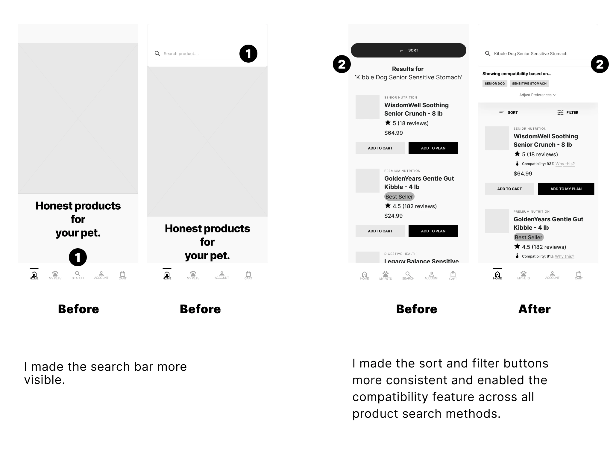
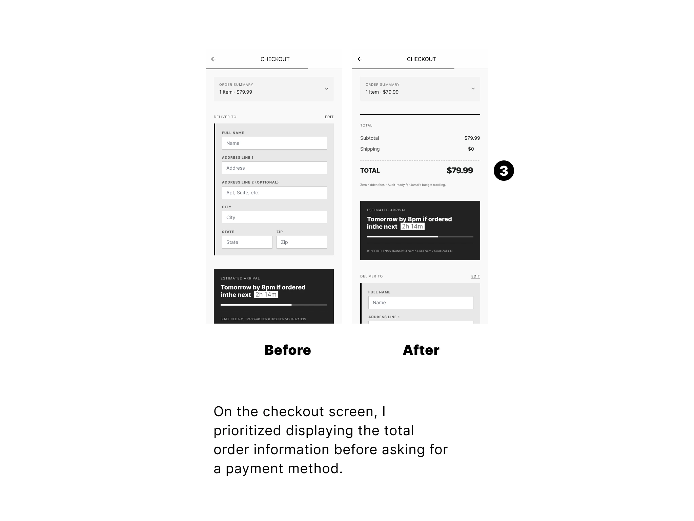
Outcomes
Design Outcomes
| Design Outcome | Evidence in the Design |
|---|---|
| 2 fewer steps before personalization begins | Pet type is selected directly in the hero instead of requiring users to browse categories or enter a separate onboarding flow before receiving personalized recommendations. |
| 5 purchase questions answered in a single PDP | The product page consolidates suitability, recommendation reasoning, veterinary validation, pricing, and monthly planning into one decision-making experience. |
| 4 trust signals unified before purchase | Compatibility Score, Why This Score, Veterinary Insight, and Price Comparison work together to help users make informed decisions. |
Reflections
From interface design to product thinking
Building PetCare fundamentally changed how I approach digital products. Throughout the project, I audited more than 100 ecommerce screens from leading pet retailers and shared my findings publicly on LinkedIn. That process introduced me to Conversion Rate Optimization (CRO) and shifted my perspective from designing attractive interfaces to designing experiences that solve business problems and help users make better decisions.
Trust is the real product
One of the biggest lessons from this project is that great products are not defined by typography, spacing, colors, or trendy UX patterns. Those elements matter, but only insofar as they support the real goal: helping users trust the product enough to make confident decisions. For businesses, success comes from continuously optimizing experiences that convert. For users, success comes from feeling confident that the product delivers on its promises. Designing for trust became the guiding principle behind every decision in PetCare.
Every assumption deserves validation
This project also reinforced the importance of testing. Many of the ideas behind PetCare—from personalized recommendations to explainable compatibility scores—are hypotheses, not facts. Validating those hypotheses through usability testing requires time and resources, but that investment is far less expensive than building the wrong product. Good design is not about being right from the beginning; it's about reducing uncertainty through continuous learning.